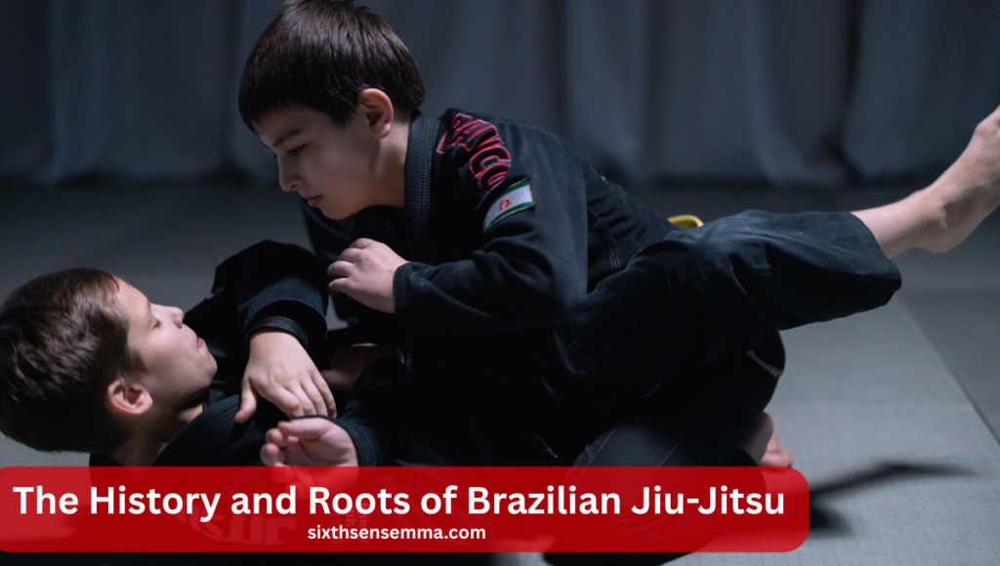
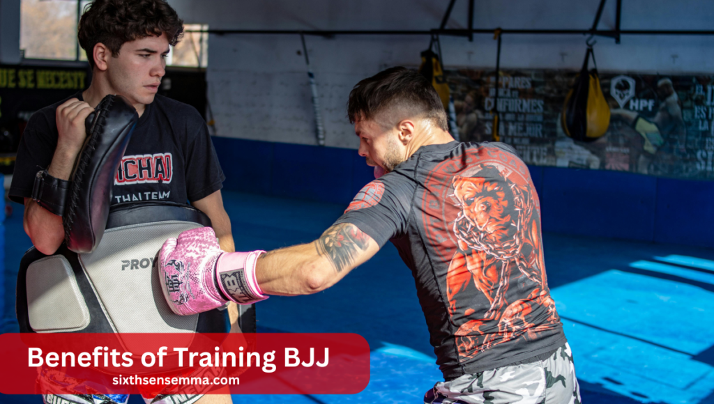
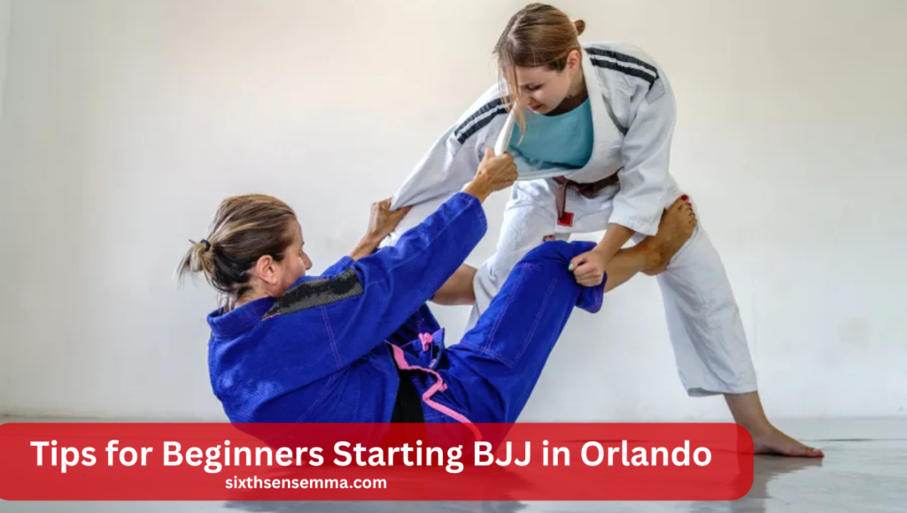

Brazilian Jiu Jitsu Orlando: Classes, Gyms & Tips

Brazilian Jiu Jitsu Orlando has become one of the fastest-growing martial arts scenes in Central Florida. With dozens of gyms offering top-tier instruction, friendly communities, and programs for all ages, more and more locals are stepping onto the mats to learn this powerful self-defense system. Whether you’re a complete beginner or an experienced athlete, BJJ in Orlando gives you a smart, safe, and effective way to train.
Why is Brazilian Jiu Jitsu so popular in Orlando?
Because it offers real self-defense skills, fun workouts, and a tight-knit community. Orlando has many great gyms with experienced instructors, making it easy for anyone to start, grow, and enjoy the journey of learning Brazilian Jiu Jitsu Orlando.
Brazilian Jiu-Jitsu
Brazilian Jiu Jitsu Orlando is a martial art that focuses on grappling, ground control, and submissions rather than punches or kicks. It teaches people how to stay calm and in control during physical situations. This martial art is known for helping people of all sizes protect themselves using smart techniques, not brute strength.
What is BJJ?
BJJ is a fighting style where the goal is to control or submit your opponent using moves like joint locks and chokeholds. It takes place mostly on the ground and teaches you how to defend yourself from different positions. It’s also used in sports competitions and mixed martial arts (MMA).
Who Can Practice It?
Anyone can start training BJJ—no need to be strong, flexible, or in top shape. Classes are available for beginners, kids, women, and older adults. Most gyms in Orlando offer friendly environments where you can learn at your own pace, build confidence, and improve your physical and mental health.
Why It’s Growing in Popularity
BJJ is becoming more popular because it offers real self-defense skills, great workouts, and a strong sense of community. People enjoy the challenge, the friendships, and the personal growth. Each class teaches something new, and many students find it fun, helpful for stress, and a great way to stay fit.
The History and Roots of Brazilian Jiu-Jitsu
Brazilian Jiu Jitsu Orlando has a deep history rooted in both Japanese martial arts and Brazilian Jiu Jitsu Orlando innovation. It started over a century ago and evolved into a worldwide discipline. The journey from old-school judo to modern BJJ shows how smart technique and family influence helped shape a global martial art.
Origins in Japan and Brazil
BJJ began with traditional Japanese jiu-jitsu and judo. In the early 1900s, master Mitsuyo Maeda moved to Brazil and taught the Gracie family. They took his knowledge and started developing their own techniques, laying the foundation for Brazilian Jiu Jitsu Orlando as we know it today.
The Gracie Family Influence
The Gracies were key in spreading BJJ. They focused on creating techniques that worked in real fights, especially for smaller people. Their success in challenge matches and early MMA helped make BJJ famous worldwide. Their legacy continues in BJJ schools across Orlando and beyond.
Evolution into a Global Martial Art
BJJ is now trained by people in nearly every country. It’s part of the core training for many MMA fighters and self-defense programs. In cities like Orlando, BJJ has become more than sport—it’s a lifestyle that connects people through learning, fitness, and a shared passion for the art.
Also Read Our Article: Best Martial Arts for Self-Defense: Which Style Suits You?
The BJJ Lifestyle in Orlando
Orlando has become a strong home for BJJ, with many gyms and a friendly, active community. Training here means more than just working out—it’s about joining a group of people who support each other, grow together, and help spread martial arts values throughout Central Florida.
The Martial Arts Culture in Central Florida
Central Florida is packed with martial arts schools, and BJJ is a major part of that culture. Gyms often mix BJJ with MMA, kickboxing, or wrestling. People here respect the art and are always welcoming to new students looking to learn, grow, and be part of the scene.
Community Support and Gym Networks
BJJ gyms in Orlando often work together, hosting joint events like open mats and seminars. There’s little rivalry—just shared passion. Whether you’re from a big academy or a small school, the community helps you feel connected, offering guidance and encouragement throughout your training.
Events, Seminars, and Open Mats in the Area
BJJ in Orlando is full of opportunities. You can attend seminars with top instructors, visit open mats on weekends, or sign up for local tournaments. These events are great for learning, meeting new people, and testing your skills in a friendly, energetic environment.
Different Styles of BJJ Training
BJJ can be practiced in different ways depending on what you’re looking for—traditional, modern, or a mix of both. Whether you want to train with a gi, without one, or try both styles, gyms in Orlando offer something for every type of student and training goal.
| Style | What You Wear | Training Focus | Popular Among |
|---|---|---|---|
| Gi | Gi (Kimono & Belt) | Grips, control, technique | Traditional BJJ students |
| No-Gi | Rash guard and shorts | Speed, movement, control | MMA & self-defense focused |
| Hybrid | Both Gi and No-Gi | Well-rounded training | Students exploring both |
Traditional Gi Jiu-Jitsu
Training in the gi uses a heavy cotton uniform that you can grip during techniques. This style focuses on slowing things down and learning how to control your opponent with precision. Many Orlando gyms offer structured gi classes that teach the basics all the way up to advanced moves.
No-Gi Grappling and MMA Crossover
No-gi grappling is done in athletic wear like rash guards and shorts. It’s faster-paced and often used in MMA training. Many people in Orlando like no-gi because it feels closer to real-life situations and improves reaction time, movement, and control without relying on clothing grips.
Hybrid Programs Offering Both
Some BJJ gyms in Orlando provide hybrid training, offering both gi and no-gi classes. This allows students to explore both styles and become more well-rounded. It’s perfect for those who want to improve all areas of their game or switch styles depending on the day.
Specialized BJJ Programs in Orlando
Orlando’s BJJ scene is not one-size-fits-all. Many gyms offer programs tailored to specific groups like women, kids, and professionals. These programs are designed to help people of all backgrounds feel safe, supported, and prepared—whether they’re learning self-defense or training for real-world challenges.
| Group | Program Features | Benefits |
|---|---|---|
| Women | Self-defense, supportive community | Confidence, safety, fitness |
| Kids and Teens | Discipline, focus, age-specific classes | Respect, fun, physical activity |
| Law Enforcement/Military | Control techniques, real-life scenarios | Safer field performance |
Women’s Only Classes and Self-Defense
Women’s classes are designed to offer a safe, supportive space for learning. These sessions focus on both sport and self-defense, teaching how to escape holds and defend against larger opponents. Many women in Orlando find BJJ boosts their confidence, fitness, and ability to handle stressful situations.
Kids and Teen Programs
BJJ for kids teaches more than just moves—it builds character. Young students learn respect, discipline, teamwork, and problem-solving through structured training. Orlando gyms have programs for all age groups, helping kids build confidence while staying active, learning self-defense, and making new friends in a safe space.
Law Enforcement and Military Training
Some Orlando BJJ gyms offer special training for police officers, first responders, and military personnel. These programs focus on control, de-escalation, and safe restraint tactics. The skills taught help professionals handle real-life confrontations more safely while reducing injury risk to themselves and others.
Benefits of Training BJJ
Training Brazilian Jiu Jitsu Orlando doesn’t just improve how you fight—it helps you live better overall. From stronger muscles to a calmer mind, BJJ builds real-life skills that go far beyond the mats. Whether for health, confidence, or safety, the benefits are felt in all parts of life.

Physical Conditioning and Endurance
BJJ gives your whole body a workout. It helps you get stronger, more flexible, and improves your heart health. Even just a few sessions each week can lead to more energy, better sleep, and weight loss. Over time, your body becomes more balanced and ready for tough challenges.
Mental Focus and Emotional Resilience
You continually encounter pressure in BJJ, and you develop the ability to remain composed under pressure. It trains your mind to think clearly, make quick decisions, and stay patient. Many people say it helps reduce anxiety and boosts emotional strength—making it easier to deal with tough days outside the gym too.
Real-World Self-Defense Skills
BJJ teaches you how to protect yourself without needing to throw punches. You learn how to control attackers, escape bad positions, and stay calm in dangerous moments. Knowing BJJ offers you a significant edge in actual self-defense scenarios because many real confrontations end on the ground.
Competitions and Tournaments in Orlando
Orlando’s BJJ scene is active and exciting. There are regular tournaments where people of all ages and skill levels come together to test themselves, have fun, and grow. Whether you’re competing or just watching, these events are a great way to connect with the local BJJ community.
Local BJJ Events and Organizations
Each year, top groups like IBJJF, NAGA, and Grappling Industries host events in Orlando. These tournaments are organized, competitive, and full of energy. They offer divisions for kids, adults, and all belt levels, so anyone can join in—whether you’re a beginner or a seasoned grappler.
How to Prepare for Your First Tournament
Preparation starts with steady training. Focus on your best moves and cardio. Eat healthy, rest well, and avoid last-minute stress. Talk to your coach about strategies and stay calm. The goal isn’t just to win—it’s to learn, improve, and get used to performing under pressure.
What to Expect at a Florida BJJ Competition
BJJ tournaments can be loud, busy, and exciting. You’ll check in, weigh in, and wait for your matches. Everyone competes in groups based on age, weight, and belt. Don’t worry if you feel nervous—it’s normal. Simply take a step, give it your all, and relish the moment.
Also Read Our Article: Martial Arts for Kids: Building Confidence and Discipline
Notable BJJ Academies in Orlando
Orlando is full of top-quality BJJ gyms that welcome students of all levels. There is a place for you whether you want to practice for competition, self-defense, fitness, or enjoyment. Below are some of the most respected and beginner-friendly academies you can visit around the city.
Gracie Barra Orlando
Gracie Barra is one of the biggest BJJ teams in the world. Their Orlando gym offers classes for all levels, including special programs for kids and women. With a structured system and focus on teamwork and respect, it’s a great place to begin or grow your BJJ journey.
The Jungle MMA & Fitness
BJJ, MMA, and fitness classes are all housed under one roof at The Jungle. It’s a good choice if you want variety in your training. The coaches are welcoming, and the environment feels like a family. Whether you’re trying BJJ for the first time or looking to cross-train, it’s worth checking out.
American Top Team East Orlando
Part of the well-known ATT network, this gym is ideal for serious students and competitors. They have high-level coaches and a wide range of classes. Whether your goal is to win medals or just stay in shape, ATT East Orlando offers strong training and a positive community.
Other Local Options Worth Visiting
Beyond the big names, Orlando has many great schools like Carlson Gracie Central Florida, Fusion X-Cel, and Orlando Brazilian Jiu Jitsu Orlando LLC Orlando FL. Each gym has its own style and vibe, so it’s smart to visit a few and see which one feels like the best fit for you.
Tips for Beginners Starting BJJ in Orlando
Starting Brazilian Jiu Jitsu Orlando can feel scary, but with the right mindset, it becomes a fun and rewarding journey. If you’re new to BJJ in Orlando, focus on learning at your own pace, staying consistent, and enjoying the process. Everyone starts as a beginner—just take the first step.

Overcoming First-Class Nerves
Feeling nervous on your first day is completely normal. Most people worry about looking silly or making mistakes. Don’t stress—just listen to your coach, follow instructions, and keep an open mind. BJJ gyms are full of friendly people who remember what it felt like to be new, too.
Building Consistency and Confidence
Confidence comes from consistency. You won’t master moves right away, and that’s okay. Try to train a few times each week, even if you feel unsure. Over time, you’ll start to recognize positions, remember techniques, and feel more at home on the mat. Just keep showing up.
Setting Realistic Training Goals
Don’t worry about belts or competing right away. Start with simple goals—like training twice a week or learning how to escape from side control. These small wins build up over time. As you grow, you can aim for bigger goals like earning your blue belt or entering a local tournament.
Conclusion
Brazilian Jiu Jitsu Orlando is more than just a martial art—it’s a growing movement that empowers people of all backgrounds to become stronger, more confident, and more connected. Whether you’re training for fitness, competition, or self-defense, the BJJ community in Orlando offers supportive gyms, experienced coaches, and programs tailored for everyone—from kids to professionals.
If you’re thinking about starting your journey, now’s the perfect time. With welcoming classes, real-world benefits, and exciting local events, BJJ in Orlando is a lifestyle worth exploring. Step onto the mat, stay consistent, and enjoy the powerful transformation that Brazilian Jiu Jitsu Orlando brings—both on and off the mats.
FAQ’s
Brazilian Jiu Jitsu Orlando can be less effective when dealing with multiple attackers or against strikes if not combined with other martial arts. It also heavily relies on ground fighting, which may not always be ideal in real-life self-defense situations.
During his training for the John Wick films, Keanu Reeves picked up Brazilian Jiu Jitsu Orlando. He trained under renowned coaches like Rigan Machado and also practiced other martial arts to prepare for action scenes.
Tai Chi and Aikido are considered some of the safest martial arts due to their low-impact training. BJJ is also relatively safe when practiced with control and proper instruction, especially compared to striking arts.
Some downsides include the steep learning curve, risk of injury to joints, and limited focus on striking or standing defense. It can also be physically demanding, especially for beginners or older adults.
There’s no single “best,” but legends like Bruce Lee, Georges St-Pierre, and modern icons like Gordon Ryan (in BJJ) are often recognized for their mastery, innovation, and impact on martial arts worldwide.
It depends on your goals. Kung Fu is fluid and traditional, while Karate focuses more on powerful, linear strikes. Both are effective in different ways and offer unique benefits for self-defense and discipline.
Yes, generally BJJ is safer than boxing because it involves less head trauma. Since it focuses on grappling and submissions, the risk of concussions and serious injuries is lower compared to striking arts.
Styles with strong striking like Muay Thai or a well-rounded MMA approach can challenge BJJ. Also, BJJ practitioners can struggle against multiple attackers or when facing someone with solid takedown defense.
All body types can succeed in BJJ. However, lanky individuals may excel at using leverage and guard techniques, while stocky grapplers might be better at pressure and top control. BJJ adapts to your shape.
Height can help with reach and certain guard positions, but it can also be a disadvantage in tight scrambles. Ultimately, timing, technique, and leverage matter more than height alone in Brazilian Jiu Jitsu Orlando.
Train with us in Coppell
The first class is free. Shorts, a t-shirt and a water bottle. We lend the rest.
Book a free class